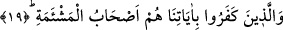
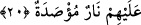

18. İşte bunlar kitapları sağdan verileceklerdir.
“İşte” bu yüce sıfatlarla bezenmiş olanlar “kitapları sağdan verileceklerdir.”
Âyetteki işâret ismi, onların Allah katında ağırlama makamında olacaklarına ve
rütbelerinin yüksek, derecelerinin yüce olacağına delâlet etmektedir.
“Ashâbü’l-meymene”nin mânâsı, bu kimselere kitapları sağ taraflarından verilecektir
ve onlar sağ yoldan Cennete götürüleceklerdir, demektir. Ya da onlar bereket/yümn,
hayır ve saâdet sâhibi kimselerdir, demektir. Çünkü sâlih insanlar itâatlerinden dolayı
hem kendi nefislerine ve hem de başkalarına bereketli olan kimselerdir. Ya da onlar sağ
el sâhibi kimselerdir, demektir.
19. Âyetlerimizi inkâr edenler ise, işte onlar soldakilerdir.
“Âyetlerimizi” hakka delil olmak üzere kitaptan gözlerinin önüne diktiğimiz
âyetlerimizi, hücceti veya Kur’an’ı “inkâr edenler ise işte onlar kitapları soldan
verileceklerdir.”
Burada “onlar” zamirinin getirilmesi onların huzur şerefinden düşeceklerine ve
kendilerinin gizlemeye (gâib sıygası ile anılmaya) müstehak olduklarına delâlet vardır.
“Ashâbü’l-meş’eme”, kitapları sol taraflarından ve arkalarından verilecek olan ve sol
taraftan Cehenneme götürülecek kimselerdir. Ya da onlar uğursuzluk, şer ve bedbahtlık
sâhibi kimselerdir, demektir. Çünkü fâsıklar günahları sebebiyle hem kendi nefislerine
ve hem de başkalarına uğursuz olan kimselerdir. Sâlih kimselerle tevessül edilmesi,
fâsıklardan uzak durulması gerekir. Ya da onlar sol el sâhibi kimselerdir, demektir.
20. Cezaları kapıları üzerlerine sımsıkı kapatılmış bir ateştir.
Onların cezâları kapıları üzerlerine sımsıkı kapatılmış bir ateştir. Artık onlara hiçbir
kapı açılmaz. Artık sonsuza dek oradan hiçbir gam ve keder dışarı çıkmaz ve hiçbir
rahatlık oraya girmez. “Sımsıkı kapatılma” Cehennem ateşinin onları çepeçevre
kuşattığını hissettirmek için ateşin sıfatı yapılmıştır.
Bu âyette hicab, hizlan/yardımsız kalıp zayıf olma ve hüsran ateşinin kapılarının nefs-i
emmâre üzerine kapatılacağına işâret vardır.[112]
[104]. Tirmizi, Libâs, 23; İbn Mâce, Tıb, 25.
[105]. İbn Kesir, IV, 512.
[106]. Bk. Müsned, III, 135.